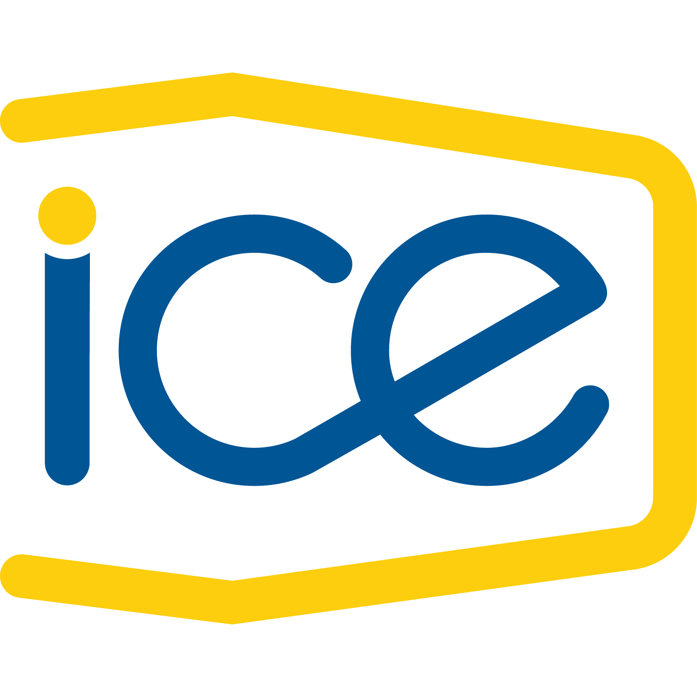
Tipos de Sistemas de IA
De las reglas simbólicas a los modelos de lenguaje: cómo funcionan los sistemas de inteligencia artificial actuales.
Depto. de Ingeniería de Sistemas y Computación · Universidad de los Andes
Inteligencia artificial: definición
La racionalidad es la capacidad que permite evaluar, entender y actuar de acuerdo a ciertos principios de mejora, para satisfacer algún objetivo o finalidad.
Russell, S. J., & Norvig, P. (2020). Artificial Intelligence: A Modern Approach (4th ed.).
IBM Deep Blue vence a Garry Kasparov
Uno de los primeros hitos mediáticos de la IA: una máquina supera al campeón mundial de ajedrez.
Imagen tomada de: datascientest.com
IBM Watson vence en Jeopardy!
Watson derrota a Ken Jennings y Brad Rutter en el famoso show de TV, demostrando comprensión de lenguaje natural a gran escala.
Fuente: IBM Research / TechRepublic
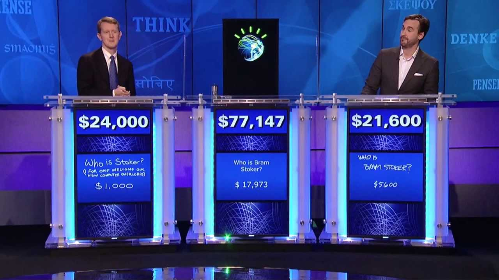
Google DeepMind vence a Lee Sedol 4-1
AlphaGo derrota a uno de los mejores jugadores de Go del mundo, un juego considerado mucho más complejo que el ajedrez.
Fuente: Google DeepMind
Los autos autoconducidos llegan a las carreteras
Los vehículos autónomos comienzan a operar en condiciones reales de tráfico.
Fuente: Waymo
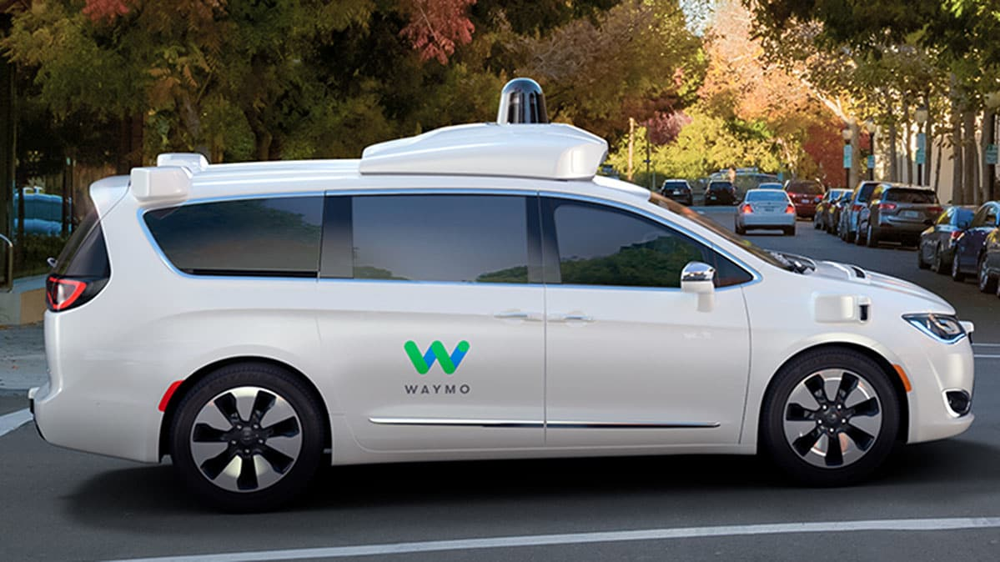
Masificación de los modelos de lenguaje
¡1 millón de usuarios en 5 días! ChatGPT populariza la IA generativa a nivel mundial.
Las reglas se construyen
con técnicas de IA
Ejemplo I — Análisis sintáctico
"El niño juega con la pelota."
- El (Artículo) · niño (Sustantivo) · juega (Verbo) · con (Preposición) · la (Artículo) · pelota (Sustantivo)
Reglas sintácticas: O → SN SV · SN → (Det)(Cuant) Sust/Pron (Adv)(Adj)* · Diccionario de artículos y determinantes
"El niño juega con la pelota"
Sintácticas + Diccionario
Análisis gramatical
Ejemplo I — Clasificador de spam
"Gana un viaje a Bogotá. Participar es totalmente gratis."
Rápidamente se dieron cuenta de la necesidad de utilizar representaciones formales en la definición del conocimiento de dominio → reutilización de reglas.
Correo entrante
Palabras clave, patrones
SPAM
Ontología
- Un vocabulario construido con cierto consenso y descrito formalmente.
- Está presente en las recomendaciones del W3C (lenguajes) como el esquema RDF o el lenguaje de ontología web (OWL).
- Permite definir términos, cómo se clasifican, sus propiedades, relaciones, etc.
De vocabularios a grafos de conocimiento
La interconexión de conceptos mediante vocabularios forma grafos. Miles de grafos interconectados siguen el estándar W3C:
- Nombres para las cosas: URI
- Modelo de datos: RDF
- Consumible vía HTTP
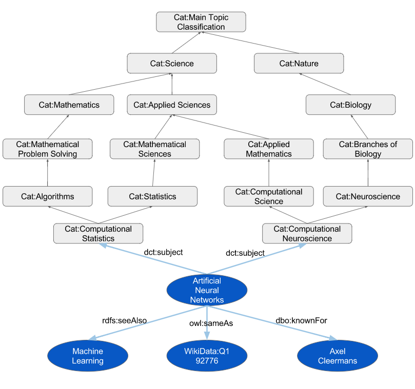
Limitaciones y ventajas de los enfoques basados en reglas
⚠️ Limitaciones
Requieren conocimiento experto humano para generar reglas. Incluso para tareas de baja complejidad, la generación de reglas es extenuante (cientos de reglas).
✅ Ventajas
La salida de un modelo basado en reglas es explicable y auditable.
Aprendizaje de máquina
En vez de programar las reglas a mano, se aprenden a partir de ejemplos. ¡Esto se entiende mejor con un par de ejercicios!
Ejercicio: Acerous vs. Non-acerous
¿A qué categoría pertenece el caballo?
Ejercicio: ¿Es una palabra portmanteau?
Determinar si la palabra "eduentretenimiento" es un portmanteau.
Portmanteau
boquiabierto · spanglish · pelirrojo · ofimática · emoticón
No son portmanteau
bandera · alumno · aprendizaje · aburrido · medianoche · carro · libertad
Reglas ⇒ Patrones aprendidos de ejemplos, no programados explícitamente.
¿Qué es el aprendizaje de máquina?
Una rama de la inteligencia artificial donde la regresión, las inferencias y las "reglas" de clasificación están determinadas por los datos… en lugar de estar "programadas" explícitamente.
Enfoque basado en datos
Tipos de aprendizaje
Aprendizaje supervisado
En los datos de entrenamiento existe una señal de supervisión que nos permite guiar el aprendizaje: etiqueta categórica → Clasificación · número real → Regresión.
| Tarea | Tipo de aprendizaje |
|---|---|
| ¿Identificar un correo spam o no spam? | Clasificación |
| ¿Predecir el peso de una persona según su altura y edad? | Regresión |
| ¿Identificar si en una imagen hay una cara? | Clasificación |
| ¿Determinar niveles de azúcar en la sangre a partir de la dieta? | Regresión |
Clasificación: correo bueno vs. SPAM
entrenamiento
aprendizaje
prueba
❌ Correo SPAM
Etiquetas: ✅ correo bueno · ❌ correo SPAM · Algoritmos: KNN, SVM, Árboles de decisión, Naïve Bayes, Redes Bayesianas, Regresión logística, Random Forests, Redes Neuronales.
Fases: Entrenamiento → Evaluación.
Regresión: predecir la altura de niños
Objetivo: predecir la altura en base a edad y lugar de nacimiento. Señal de supervisión: Altura (cm).
| Edad | País | Altura (cm) |
|---|---|---|
| 1 | Colombia | 75 |
| 2 | Costa Rica | 85 |
| 3 | Perú | 95 |
| 4 | Chile | 102 |
| 5 | Argentina | 109 |
Regresión lineal, SVR, Árboles, Bayesiana, Adaboost, Redes Neuronales
— Aprendizaje NO supervisado —
Sin señal de supervisión
No hay etiquetas: la idea es describir los datos, generalmente construyendo grupos (clustering).
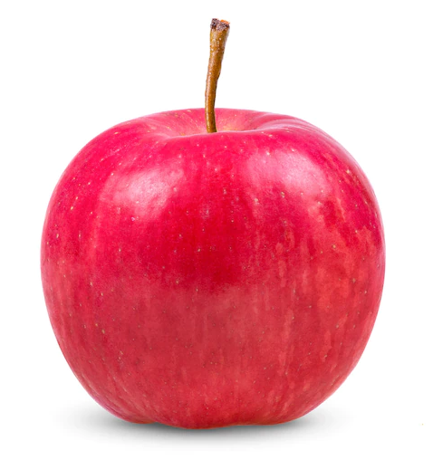
¿Cómo organizarían estos elementos?
Agrupamiento sin etiquetas (clustering)
Los grupos se forman con base en la distancia en el espacio de características (= características comunes).
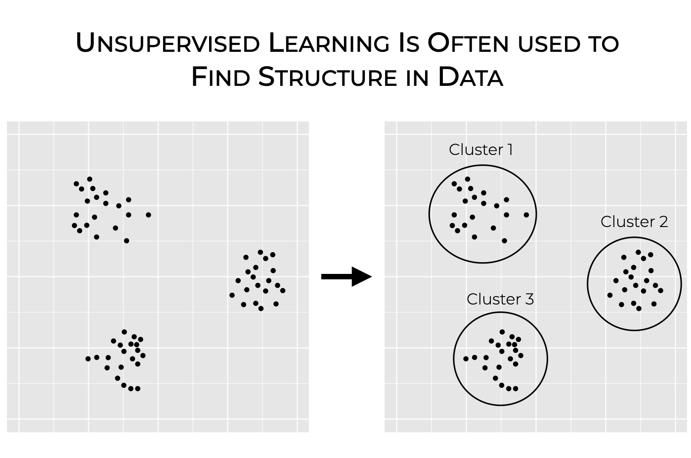
Detección de anomalías
Los grupos se forman con base en la distancia en el espacio de características. Los puntos alejados de todo grupo se consideran anomalías.
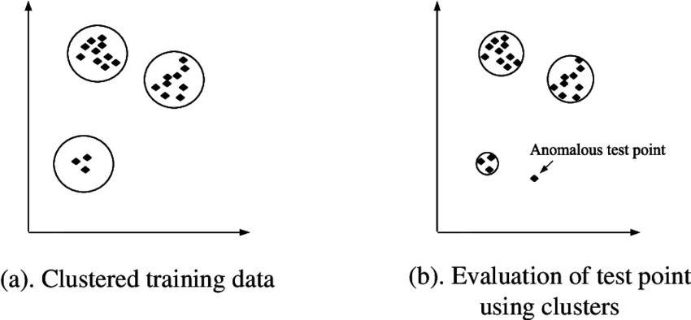
— Aprendizaje reforzado —
Aprendizaje por refuerzo
Un paradigma del aprendizaje automático en el que un agente aprende a tomar decisiones mediante la interacción con un entorno, recibiendo recompensas o penalizaciones según sus acciones.
Agentes
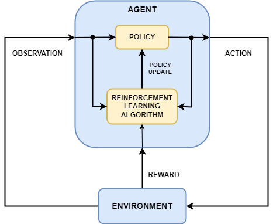
Agentes modernos = LLM + ambiente externo
¡Integramos modelos de lenguaje grande (LLMs) en agentes de IA para que puedan usar el lenguaje para razonar y comunicarse!
Text Input
Text Output
¿Por qué razonar es importante?
Mapear una observación directamente a una acción sin un proceso de razonamiento es difícil.
ReAct = Reason to Act (Razonamiento para actuar)
Memoria
- Capaz de leer y escribir información.
- Almacena experiencias, conocimientos, habilidades, etc.
- Permanece a lo largo de nuevas experiencias (memoria a largo plazo).
Herramientas (Acciones = Herramientas)
Una tool es una función que se le proporciona a un LLM para que cumpla un objetivo específico, ampliando sus capacidades para interactuar con el mundo externo.
| Herramienta | Descripción |
|---|---|
| Búsqueda Web | Permite al agente obtener información actualizada de Internet. |
| Generación de Imágenes | Crea imágenes a partir de descripciones en texto. |
| Recuperación (Retrieval) | Obtiene información desde una fuente externa o base de datos. |
| Interfaz API | Interactúa con servicios externos (GitHub, YouTube, Spotify, etc.). |
¿Cómo funciona? El LLM detecta que necesita una herramienta → genera una invocación (ej. call weather_tool("París")) → el agente la ejecuta → el resultado vuelve al LLM para responder al usuario.
Aprendizaje profundo
¡Construir redes neuronales grandes!
- El término empezó a ganar popularidad a mediados de los 2000s.
- El aprendizaje profundo desbloqueó muchas soluciones en múltiples dominios.
- Se han realizado más avances en los últimos 10 años que en los 60 años anteriores.
Inspiración biológica
Entre las décadas de 1950 y 1960, el científico Frank Rosenblatt, inspirado en el trabajo de Warren McCulloch y Walter Pitts, creó el Perceptrón.
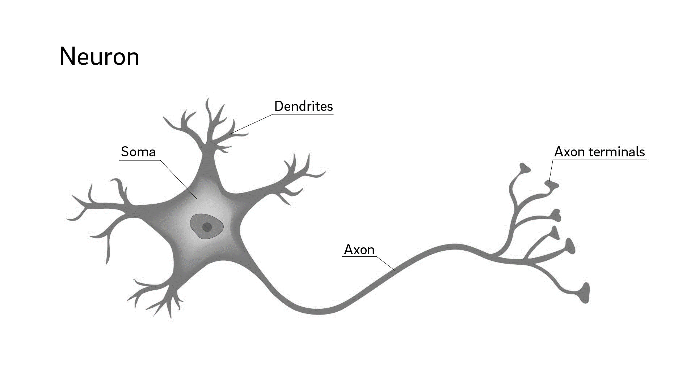
1965 — Multilayer Perceptron
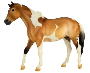
Clasificación de imágenes: entrada (píxeles) → capas ocultas → salida (categoría).
Muchas capas ocultas intermedias
- Difíciles de entrenar para la época y costosas computacionalmente.
- En los años 80 y 90 se entrenaban redes neuronales por debajo del millón de parámetros.
- Hoy en día los modelos son del orden de billones o trillones de parámetros.
¿Gracias a qué se lograron?
📊 Datos
Ubuntu Dialogue Corpus (2016) — 1 millón de diálogos. BlenderBot (2020) — 9.4B parámetros, 1.5B conversaciones de Reddit.
🖥️ Hardware
Las GPUs tienen la capacidad de realizar varias tareas de forma simultánea.
⚙️ Algoritmos
Algoritmos e implementaciones cada vez más eficientes.
IA Generativa
¿Qué es la IA Generativa?
La IA generativa (GenAI) es un tipo de Inteligencia Artificial que crea nuevo contenido en base a lo que aprendió de contenido existente.
Ya existía, pero solo fue con la llegada de los modelos de deep learning que generó resultados al nivel humano.
¿De dónde viene lo "generativo"?
Modelos generativos vs. discriminativos
Tarea de ejemplo: diferenciar entre un gato y un perro.
Discriminativos
"¡Mira!, los perros tienen collar, y los gatos no. Ignoremos todo lo demás."
Aprenden la frontera de decisión entre clases usando pocas características distintivas.


Generativos: "¿qué es un perro?"
Ahora que has aprendido sobre perros mirando grandes corpus de información…
📄 Tipo Textual (documentos)
"Mamífero carnívoro doméstico de la familia de los cánidos que se caracteriza por tener los sentidos del olfato y el oído muy finos…"
GPT, PaLM, LLaMA
🖼️ Tipo Gráfica (imágenes)
DALL·E, Stable Diffusion
Dos grandes familias de modelos generativos
🖼️ Modelos generativos de imágenes
Producen nuevas imágenes usando técnicas como difusión. Dado un prompt, transforman ruido aleatorio en imágenes.
💬 Modelos de lenguaje generativos (LLMs)
Aprenden patrones del lenguaje usando grandes corpus documentales, y dado un texto de entrada predicen la siguiente palabra.
¿Qué es un modelo de lenguaje?
Modelos construidos para predecir la distribución de probabilidad de la siguiente palabra en una secuencia, dadas las palabras anteriores.
Contexto: "Bogotá es la capital de ______"
Distribución antes de entrenar más
A más datos, más certeza
Aprender a crear el modelo probabilístico de manera efectiva: modelos de atención + grandes corpus documentales. "Bogotá" y "capital" son las palabras más importantes.
Poco entrenamiento
Entrenamiento medio
Mucho entrenamiento
→ Incremento en el tamaño del conjunto de datos de entrenamiento
Generación autoregresiva
Aplico de forma repetitiva el proceso de predecir la palabra siguiente:
Lima es la capital de Perú.
Lima es la capital de Perú. Se
Lima es la capital de Perú. Se encuentra
Lima es la capital de Perú. Se encuentra situada
Lima es la ciudad capital de la República del Perú. Se encuentra situada en la costa central del país, a orillas del océano Pacífico…
😝 Alucinaciones
Palabras o frases generadas por el modelo que carecen de veracidad, no tienen sentido, o son gramaticalmente incorrectas.
¡FALSO!
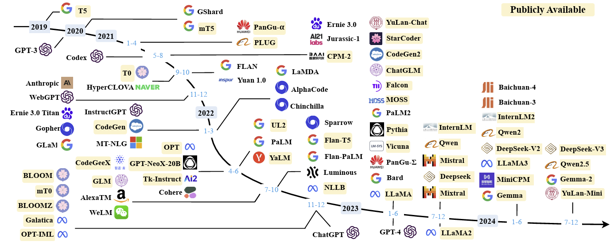
Modelos cada vez más grandes
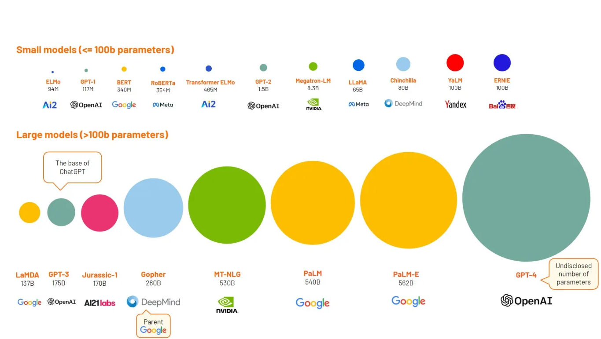
Ingeniería de prompts y
aprendizaje en contexto
¿Qué es un prompt?
Una cadena de texto que un usuario envía a un modelo de lenguaje para que realice algo útil. El prompt crea un contexto que guía al LLM a generar resultados útiles.
El proceso de encontrar prompts efectivos para una tarea se conoce como ingeniería de prompts.
Interacción conversacional vía prompts
Sistema conversacional (chatbot) que genera respuestas coherentes y naturales a instrucciones (prompts) dadas.
Cada nuevo prompt se suma al contexto previo, permitiendo una conversación coherente turno a turno.
Lineamientos básicos
- Escribir instrucciones claras. Use delimitadores para indicar las distintas partes de la entrada:
```,""",<tag></tag>,: - Entre más sofisticado el prompt, con mayor claridad debe estar escrito. Descomponer tareas complejas en tareas más pequeñas y ordenadas ayuda a obtener mejores resultados.
Una nueva propiedad emergente
A medida que los modelos son cada vez más grandes, exhiben una nueva propiedad: el aprendizaje en contexto. Parecen aprender sin actualizar sus parámetros, simplemente a partir de ejemplos dados en el prompt.
Tom B. Brown, et al. (2020) realizó el primer estudio al respecto y denominó a la técnica few-shot learning. "Language models are few-shot learners", NeurIPS 2020.
Ejemplos de few-shot learning
Cycle letters
pleap → apple
Random insertion
a.p!p/l!e → apple
Reversed words
elppa → apple
Tom B. Brown, et al. 2020. "Language models are few-shot learners", NeurIPS 2020.
Fluido, pero no fáctico
- Construye sentencias sintáctica y gramaticalmente correctas en múltiples lenguajes.
- Estilos: informal, formal, académico.
- No necesariamente basado en hechos.
- No necesariamente veraz.
"What ChatGPT and generative AI mean for science", Chris Stokel-Walker & Richard Van Noorden, 2023, Nature.
Datos de entrenamiento (2023)
| Dataset | # tokens | Proporción |
|---|---|---|
| Common Crawl (Internet) | 410 mil millones | 60% |
| WebText2 (Internet) | 19 mil millones | 22% |
| Books1 | 12 mil millones | 8% |
| Books2 | 55 mil millones | 8% |
| Wikipedia | 3 mil millones | 3% |
>80% proviene de Internet
⚠️ Problemas de Internet como fuente
Información desactualizada, confusa o falsa. Perpetúa estereotipos (discriminación/exclusión). Lenguaje tóxico u ofensivo.
¿Preguntas?
Conversemos sobre reglas, aprendizaje de máquina, agentes y modelos de lenguaje.
Depto. de Ingeniería de Sistemas y Computación · Universidad de los Andes